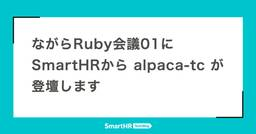
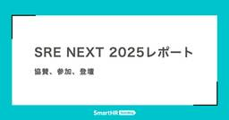
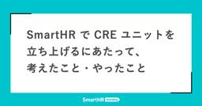

SmartHR Tech Blog
https://tech.smarthr.jp/
SmartHR 開発者ブログ
フィード

ながらRuby会議01にSmartHRから alpaca-tc が登壇します
SmartHR Tech Blog
SmartHRは、2025年9月6日(土)に岐阜・うかいミュージアム 四阿で開催されるながらRuby会議01に協賛し、@alpaca-tc が登壇します。 登壇 @alpaca-tc 「refinementsのメソッド定義を4000倍速くした話」 こんにちは @alpaca-tc です。今回は「refinementsのメソッド定義を4000倍速くした話」というタイトルで、Ruby 3.5(trunk)でrefinementsのメソッド定義を高速化した話をします。 私はSmartHRでDPE(Developer Productivity Engineering)ユニットに所属しており、開発者の生…
1日前

SRE NEXT 2025レポート —— 協賛、参加、登壇
SmartHR Tech Blog
SmartHRでSREをしているsato-sこと佐藤沢彦です。 SmartHRは2025/7/11-12にTOC有明で行われたSRE NEXT 2025に協賛＆参加＆登壇させていただきました。 活動内容は事前には"SmartHR は SRE NEXT 2025 にランチスポンサーとして協賛し、SRE 佐藤 沢彦が登壇します！"でもご紹介させていただきました。 この記事では改めて当日の様子をご紹介します。 SRE NEXTとは SRE NEXTとは、信頼性に関わるプラクティスに関心をもつエンジニアのためのカンファレンスです。 SRE Loungeのメンバーが中心となって運営してくださっています。…
1日前

SmartHR で CRE ユニットを立ち上げるにあたって、考えたこと・やったこと 1
1
SmartHR Tech Blog
こんにちは！SmartHR のCRE部/CREユニットでプロダクトエンジニアをしている、a-knowです。愛車のオープンカーであるダイハツコペン ローブSでのドライブが趣味なのですが、そろそろオープンカードライブが厳しい季節になってきましたね。涼しい秋の到来を待ち焦がれる毎日です。 さて、この記事のタイトルにもありますとおり、この度 SmartHR で新たに CRE（Customer Reliability Engineering）ユニットを立ち上げる運びとなりました！ 名刺風のバーチャル背景の前でポーズを取る当記事筆者・a-know 実は既にこのブログに先んじて、SmartHR での CRE…
3日前

課金基盤の長期開発プロジェクトにおける総合テストの実践と学び
SmartHR Tech Blog
こんにちは！品質保証部のプロダクト基盤ユニット所属、QAエンジニア（以下、QAE）のchokichiです。 今回は、「雇用形態別課金」プロジェクトの総合テストについて振り返ってみたので、設計思想から実際の結果分析まで、包み隠さずご紹介します。 ※本記事でいう「総合テスト」は、外部システムとの連携や運用フローの確認も含めたリリース前の総合的なテストという意味です。 「雇用形態別課金」プロジェクトは、課金基盤チームが約11ヶ月という長期間をかけて開発した大規模プロジェクトです。そのうち、総合テストは約3ヶ月かけて実施しました。 同じように長期開発プロジェクトに取り組んでいる開発チームの皆さんや、基…
9日前
SmartHR最大のRailsアプリケーションにリードレプリカを導入しました
SmartHR Tech Blog
こんにちは。高知県在住の @kawaida です。 最近子どもが捕まえて来たダンゴムシを飼い始めました。 ダンゴムシって湿度がないと呼吸ができないんですね。知らなかった。 この記事では、「基本機能」と呼ばれる SmartHR 最大の Rails アプリケーションにリードレプリカを導入して１年が経ったので導入する際に考えたことをご紹介します。 背景 「基本機能」はフィーチャーチームを中心にプロダクト開発に必要なことは何でもやるスタイルで開発を進めていました。 tech.smarthr.jp しかし、フィーチャーチームはそれぞれの担当機能を自律的に開発しているので、アーキテクチャ、パフォーマンスな…
9日前
関西Ruby会議08レポート ── 前夜祭、本編、叡電LT
SmartHR Tech Blog
SmartHRは、2025年6月28日に京都府・先斗町歌舞練場で開催された 関西Ruby会議08 に Matz Sponsor として協賛し、10名が参加し、1名がスポンサーLTに登壇し、ブースも出展しました。 この記事では、前後イベントも含め、その模様をmotty と pndcat で手分けしてお届けします！ スポンサー企業の幟旗 前夜祭 関西Ruby会議08 前夜祭 RejectKaigiは、はてな社の京都オフィスで開催されました。 どの発表も「Rubyが好きだから、Rubyで作る」という気持ちが伝わってくる発表でした。 一番印象に残っているのは、joker1007さんの「rubygem開…
9日前
品質を「語る」とき、私たちは何を話しているのか
SmartHR Tech Blog
品質を「語る」とき、私たちは何を話しているのか。独り歩きする魅力的品質、当たり前品質 こんにちは！QAエンジニアのhigesawaです。 今回は開発現場やネット記事などで私が感じる「狩野モデル（Kano Model）」のモヤモヤを言語化してみたいと思います。 はじめに：それ、本当に「品質」の話ですか？ 「この機能、ユーザーにとって魅力的品質だよね」 「これはあって当たり前の機能だから当たり前品質だ」 開発の現場やプロダクト会議で、こんな言葉を耳にしたことがある人は多いのではないでしょうか。 また、ネット記事で魅力的品質や当たり前品質の具体例として「〇〇機能」と記載されているのを目にしたことがあ…
11日前
SmartHR は SRE NEXT 2025 にランチスポンサーとして協賛し、SRE 佐藤 沢彦が登壇します！
SmartHR Tech Blog
2025年7月11日（金）〜12日（土）にTOC有明で開催されるSRE NEXT 2025にSmartHRは「ランチスポンサー」として協賛します！ また、当社SREチームの 佐藤 沢彦が登壇することが決定しました。 SRE NEXT 2025とは SRE NEXT 2025とは、信頼性に関するプラクティスに深い関心を持つエンジニアのためのカンファレンスです。 sre-next.dev ランチスポンサーとして協賛します！ SmartHRはランチスポンサーとして、7/12のランチにスパムむすびを提供いたします！ spams-good.amebaownd.com スパムおむすびと合わせて、Smart…
11日前
第11回SmartHR LT大会レポート ── 4ヶ月ぶりの開催で過去最多96名参加！
SmartHR Tech Blog
こんにちは、SmartHR で組織図と従業員サーベイと人事労務レポートを開発している AzuKi です。 この記事では、2025 年 6 月 20 日に開催した第 11 回 SmartHR LT 大会の模様を、配置シミュレーションを開発している ron さんと、権限基盤ユニット所属の hotaka さんと一緒にお届けします。 今回は、4 ヶ月ぶりの開催ということもあり過去最多の 96 名（オンラインを含む）が参加し、久しぶりの開催を待ちわびていた多くの参加者の熱気に包まれた LT 大会となりました。 SmartHR LT 大会とは 参加者情報 発表レポート 面接の深掘り力を上げる グラフ DB…
11日前
品質保証部 労務ユニット体制の変更とそれに伴うメンバー募集を新規にオープンしました！
SmartHR Tech Blog
品質保証部 労務ユニット体制の変更とそれに伴うメンバー募集を新規にオープンしました！ SmartHR 品質保証部マネージャーのtarappoです。 SmartHRは7月から下半期になります。 下半期がはじまったこのタイミングで、品質保証部の労務ユニットの体制変更をおこないました。 その体制を変更するに至った理由と、今回の体制に伴い新たにオープンした求人を紹介します。 品質保証部 労務ユニットの新体制の紹介 FY25上半期における品質保証部の労務ユニット体制は次のような形でした。 旧労務ユニット体制 労務ユニットAと労務ユニットBがあり、それぞれのユニットで担当するプロダクトを決めていました。 …
12日前
社内版OSS Gateを開催し、7本のPull Requestがマージされました
SmartHR Tech Blog
こんにちは。プロダクトエンジニアの@ymtdzzzです。2025年5月に社内版OSS Gate、「OSSミートアップチャレンジ」を開催しました。その結果、会の中で7本のPull Requestが作成され、すべてがマージされました。 この記事では、OSS貢献を促進するために構築したIssue収集の仕組みと、イベント当日の様子をご紹介します。 「OSSミートアップチャレンジ」とは 「OSSミートアップチャレンジ」は、「OSSやっていきの集い」が企画・開催した「OSS貢献の"入り口"をサポートする」社内イベントです（オンライン開催）。コンセプトからもわかる通り、OSS Gateから着想を得たイベント…
13日前
Rails Girls Izumo 1st にスポンサー＆コーチとして参加してきました！
SmartHR Tech Blog
こんにちは。CREユニットメンバーの 16bit_idol です。 2025年6月6日（金）〜7日（土）、島根県出雲市で開催された Rails Girls Izumo 1st に、スポンサー企業の一員として、そしてコーチとして参加してきました！ 東京から出雲へ出張し、参加者や地元の方との素敵な出会いがぎゅっと詰まった2日間を振り返ります。 みんなで楽しく開発している様子 Rails Girlsって？ Rails Girls は、2010年にフィンランドで始まった、非営利のボランティアコミュニティです。 「女性が自分のアイデアを形にできるツールとコミュニティを提供する」ことを目的に、世界中で開催…
15日前
年末調整チームの品質保証における半年間の改善
SmartHR Tech Blog
年末調整チームの品質保証における半年間の改善 こんにちは。年末調整チームでプロダクトエンジニアをやっているkashiwara0205です。 私はチームの中で品質保証についてオーナーシップを持っています。 年末調整チームには専任のQAエンジニアがいないため、チーム内で品質保証に関わる業務の推進役を担当しています。 2024年11月頃から2025年7月の現在に至るまで、様々な施策にチーム全体で取り組んできました。 この半年間で取り組んだ内容や効果について時系列で紹介します。 不具合分析の実施（2024年 11月 ~ 2025年 1月） まず、現状を知るためにQAエンジニア主催で不具合分析を実施しま…
15日前
ユーザー信頼をどうつくる？ CRE CAMP参加と登壇レポート
SmartHR Tech Blog
こんにちは！CREユニットメンバーの16bit_idolです。 SmartHRでは、6月に初めてCREユニットが誕生しました。 今後は、SmartHRでもCREを盛り上げていきたい気持ちが強く、活動をどんどん発信していきたいと思っています！ 2025年6月26日（木）、CRE（Customer Reliability Engineering）に関わる人々が集うイベント CRE Camp #1 ユーザー信頼性を支える現場の知見LT大会 に参加しました。 今回はSmartHRのCREユニットチーフである@a-know（井上大輔）さんの登壇もあり、学びあり、共感ありの熱い時間を過ごしました。 記念す…
17日前
2人目のMLエンジニアとして入社しました
SmartHR Tech Blog
6月より、SmartHRにMLエンジニアとして入社しましたyamashiroといいます。 入社してから早くも1ヶ月が経とうとしています。日ごとに暑さが増してきましたが、フルリモートという勤務形態のおかげで、快適な環境で業務に集中できています。 4月に入社した井上さんに引続き、2人目のMLエンジニアとして入社しました。 この記事では、私のこれまでの経歴やSmartHRへの入社経緯、所属チームや現在の業務についてお話しさせていただきます。 これまでの経歴 前職は、オンライン英会話サービスを提供する企業に勤めておりました。そこでは機械学習エンジニアとチームマネージャーを兼務し、英語スピーキングテスト…
17日前
EMは「人とチームの可能性にレバレッジをかける仕事」 —— はてな・daiksyさんとの対談から考えるEMとスクラムマスターの関係性
SmartHR Tech Blog
こんにちは、SmartHRでアジャイルコーチをしている@wassanです。 2025年6月12日と19日、SmartHRの社内勉強会「アジャイルやっていきの集い」特別会として、株式会社はてなのエンジニアリングマネージャー（EM）であり、スクラムやScrum@Scaleに関する著書を持つ@daiksyさんをお招きし、2週にわたって対談を行いました。 今回、daiksyさんに対談を依頼した背景には、いくつかの理由がありました。SmartHRでは、現在、Scrum@Scaleの組織的な導入を進めており、EMとスクラムマスターの役割を整理し、よりよい形で統合したいと考えていました。そのため、Scrum…
18日前
データエンジニアのわたしがSmartHRのAIチームに入った理由
SmartHR Tech Blog
こんにちは！SmartHRのAIチームにデータエンジニアとして6月に入社したhanaoriです。 「どうしてAIチームにデータエンジニアとして入ろうと思ったのか」「そもそもデータエンジニアってなんやねん」と思われる方もいらっしゃると思います。わたしの簡単な経歴を踏まえつつ、 SmartHRのAIチームでデータエンジニアとして働く魅力 をお伝えできれば嬉しいです！ こんな人間です もともとはサーバーサイドエンジニアとしてプロダクト開発に関わっていました。自分がつくった機能をユーザーに使ってもらえるのが、素直に嬉しかったです。 データエンジニアへの転機が訪れたのは、note株式会社で働いていたとき…
23日前
SmartHRは、関西Ruby会議08にMatz Sponsorとして協賛します！
SmartHR Tech Blog
SmartHRは、2025年6月28日に京都府京都市の先斗町歌舞練場で開催される関西Ruby会議08にMatz Sponsorとして協賛します！ ブースでは、関西Ruby会議08限定の「SmartHRの増えてくアクキー」をお渡し！ SmartHRブースで交流してくださった方には、関西Ruby会議08でしかもらえない「SmartHRの増えてくアクキー」を先着100名でお配りします。 「SmartHRの増えてくアクキー」について詳しくは、次の記事をご覧ください。 tech.smarthr.jp メンバーは、それぞれ別な増えてくアクキーをお渡し！ SmartHRパーカーを着たメンバーはそれぞれ別の増…
23日前
TSKaigi 2025レポート —— 協賛、参加、登壇
SmartHR Tech Blog
こんにちは！SmartHRでアクセシビリティエンジニアをしているtajimanです！ SmartHRは、2025年5月23日〜24日に開催された「TSKaigi 2025」にBronzeスポンサーとして協賛し、7名が参加し、2名が登壇しました。 この記事では、イベントの模様と合わせて、プロポーザル活動から登壇までの経験をお届けします！ TSKaigi 2025とは TSKaigi 2025は、TypeScriptに関する技術カンファレンスです。今年のミッションは「学び、繋がり、型を破ろう」でした。 2025.tskaigi.org Bronzeスポンサーとして協賛しました SmartHRはTS…
23日前
生成AI×社会課題ハッカソンに協賛しました！
SmartHR Tech Blog
こんにちは。AIインテグレーションユニットの yamashiro と hanaori です。 この記事では、2025年4月22日から始まった「生成AI×社会課題ハッカソン」と、その集大成である2025年6月21日に開催された「生成AI×社会課題 Tech Conference」の模様をお届けします。 主催のWAKE Careerさんは、IT業界のジェンダーギャップを解消し、女性エンジニアが希望のキャリアを実現して長く活躍できるような取り組みを進められています。 私たちSmartHRは、会場スポンサーとしてイベントスペースをご提供しました。 生成AI×社会課題ハッカソンとは 生成AI×社会課題ハ…
1ヶ月前
弊社のheading levelがめちゃくちゃだった件と 解決のためにしたことの話
SmartHR Tech Blog
こんにちは。プロダクトエンジニアの@atsushimです。 smarthrでは社内でひろくsmarthr-ui が利用されています。 大変便利なのですが、使っていく上で色々問題も発生し、その都度対応してきています。 今回は発生した問題の一つ、Headingのレベルがめちゃくちゃになってしまった、という問題とその解決のためにしたことを紹介しようと思います。 Headingのレベルってそもそも何？なんで重要なの？ HTMLの見出し(Heading)要素は <h1> から <h6> まで、6種類存在します。 h1がレベルとして最上位、h6が最下位になり、ページ内のコンテンツの構造に合わせて、h1から…
1ヶ月前
沢田マンションツアー as RubyKaigi 2025 Day 4 & 5 —— 「無名の質」に会いに行く
SmartHR Tech Blog
こんにちは。@makicamel（川原万季）と@coe401_（塩井美咲）です。 2025年4月16〜18日の3日間、愛媛県は松山市に1,500人を超えるRubyistが集い、RubyKaigi 2025が開催されました。本当に楽しかったですね。 そんなKaigiの興奮覚めやらぬ翌日翌々日、つまりDay 4 & 5にわたしたちは愛媛のお隣、高知県内にある沢田マンションへ行ってきました。貴重な経験だったので、SmartHR Tech Blogのスペースをお借りして、沢田マンションツアーをレポートしたいと思います。 目次 目次 沢田マンションとは？ RubyKaigi 2023で出会った「無名の質…
1ヶ月前
新卒0期生エンジニアと一緒に品質について考えてみた
SmartHR Tech Blog
こんにちは！QAエンジニアのtoyoseaです。 この記事では、2025年4月入社の新卒0期生のプロダクトエンジニアを対象に行なった品質保証部のオンボーディング施策についてお伝えします。 品質保証部のオンボーディング施策について 2025年4月、SmartHRに新卒0期生（プロダクトエンジニア5名）が入社してくれました。 これを受けて、品質保証部では「品質について考える会」や「テスト設計」に関するオンボーディング施策を実施しました。 背景としては、新しく入社された方に品質保証部との関わり方や今後の方針について知ってもらった上で、QAについての理解を深めてもらうためです。 そして、本オンボーディ…
1ヶ月前
SLO運用の実践 —— 開発と信頼性担保の両立
SmartHR Tech Blog
こんにちは、SmartHRで人事評価機能の開発を担当している@takeshi_o4です。本記事では、人事評価機能開発チームでSLOを導入して改善したプロセスを書いていきます。 2024年に人事評価機能開発チームにSLOを導入しました 現在SmartHRではSLOの導入が推奨されています。 tech.smarthr.jp これに先立って、人事評価機能開発チームでは2024年にSLOを導入し運用を開始していました。 直面した課題 SLOを導入して運用してみると、以下のような課題に直面しました。 外部APIのパフォーマンス低下が、直接SLO違反につながってしまう 対応工数が莫大なことで、SLO対応が…
1ヶ月前
「RubyKaigi 2025事後勉強会 —— 東京でまた会い鯛！」を開催しました
SmartHR Tech Blog
こんにちは！ SmartHR基本機能を開発しているプロダクトエンジニアのpndcatです。 RubyKaigiオーガナイザーや、SmartHRのRubyKaigi運営スタッフもしていました。 今回は、5月16日に開催した「RubyKaigi 2025事後勉強会 —— 東京でまた会い鯛！」の様子をお届けします。 事後勉強会のアイキャッチ また、「RubyKaigi 2025事前勉強会 —— 初参加でもつながり鯛！」は以下の記事で紹介しておりますので、ぜひこちらも読んでいただけると嬉しいです。 tech.smarthr.jp 開催概要 SmartHRではRubyKaigi 2025のコンセプトを「…
1ヶ月前
プロダクトエンジニア Acting Manager 体験記 —— 3ヶ月間のActionと学び
SmartHR Tech Blog
現在、労務プロダクト本部のマネージャーを務めている yuzuruです。 SmartHRにおける、前例の少ないActing Managerとしての3ヶ月の体験記を共有します。 Acting Managerとは？ SmartHRでは、2024年7月より、Acting（代理）制度が導入されました。 この制度は、事業・組織の急成長に伴うマネジメント層の強化を目的とし、外部採用をより適切に活用するために設けられました。具体的には、外部からいきなり正式な役職に就く「パラシュート人事」に伴うリスクを軽減するため、正式任命までの準備期間として「Acting期間」を設けるものです。 Acting期間は、正式に役…
1ヶ月前
成熟市場に参入する難しさとおもしろさ —— 勤怠管理機能PMの三好さんにインタビュー
SmartHR Tech Blog
SmartHRは、新しく勤怠管理機能をリリースしました！ そこで今回は、勤怠管理機能の担当プロダクトマネージャー（以下、PM）の三好さん（@hiroki_m）に、開発の裏側を伺ってきました。成熟市場である勤怠管理市場に新規参入するまでに、さまざまな困難を乗り越えてきた様子をお伝えできれば幸いです。 SmartHRだからこそ勤怠管理市場に参入する意味がある —— まずは簡単な自己紹介をお願いします。 PMの三好です。社会人歴が23年に達してしまいました。キャリアの始まりは法人営業で、そこから代理店営業や、事業企画、PMなどを経て、2018年にSmartHRに入社しました。入社してからは5年ほど年…
1ヶ月前
SmartHR AI 活用 LT 大会レポート
SmartHR Tech Blog
こんにちは！SmartHRでエンジニアリングマネージャーをしている yoshinarl です。 今回は 2025年4月25日に開催したSmartHR AI 活用 LT 大会の模様をお届けします。 「AI 活用 LT 大会」とあるとおり、今回はテーマを「AI」に絞っています。絞ってはいるものの、 プロダクトへのAI導入 開発フローでのAI活用 趣味で触っているAIの紹介 のようにAIが関係するものであれば広く対象としています。 急加速するAIの波に乗り遅れないよう、広く知見を共有していこうという目的のもと、テーマを絞りました。 また、いつもとは異なる取り組みとして、LT大会と懇親会の間にAsk …
1ヶ月前
t-wadaさん「開発者生産性の観点から考える自動テスト」社内講演会
SmartHR Tech Blog
集合写真（t-wadaさんのポーズと言われ一部が腕を組んでいるシーン） こんにちは、品質保証部のtarappoです。 2025年5月26日（月）に和田卓人さん（以後、t-wadaさん）をお招きし、社内講演会を開催しました。 本記事では、その講演会に至った経緯や講演会の内容、そしてそこからのアクションについて紹介します。 t-wadaさんのプロフィールは次のとおりです。 和田卓人 （わだ たくと） プログラマ、テスト駆動開発者 学生時代にソフトウェア工学を学び、オブジェクト指向分析/設計に傾倒。執筆活動や講演、ハンズオンイベントなどを通じてテスト駆動開発を広めようと努力している。 『プログラマが…
1ヶ月前
第39回 人工知能学会全国大会の協賛およびビアバッシュを開催しました！
SmartHR Tech Blog
SmartHRは2025年5月27日〜30日までグランキューブ大阪にて開催された第39回 人工知能学会全国大会(JSAI2025)にゴールドスポンサーとして協賛しました。 SmartHRからはAIインテグレーションユニットのメンバーをはじめとしたAIへの関心が高いメンバーが参加し、AIの最新動向について聴講しました。 本記事ではMLエンジニアの井上耕太朗と、タレントマネジメントプロダクト開発本部のhoriyuが人工知能学会の様子と、弊社が主催した学生限定のビアバッシュについてご紹介します！ 人工知能学会全国大会って？ 人工知能学会は一般社団法人人工知能学会が主催する、学術および産業などへの人工…
2ヶ月前